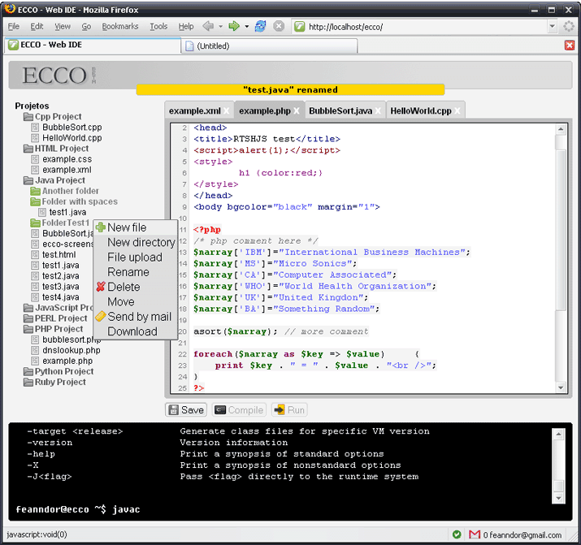

ECCO
Online Code Editor and Compiler
ECCO is a Web IDE. In other words is an online development environment with file manager, console interface for compiling and execution of code and an editor with syntax highlighting, tabs and support for many languages which is accessed using a browser.
Main goals
- E-learning + interactive tutorials
Students can easily learn new languages through examples or interactive tutorials;
Students can learn basic linux commands;
Teachers can track students progress; - Instant development and test of code
Begin to code without spending time with configurations and environments; - Access your code from anywhere
As an online service, it can be accessed from anywhere; - Must be easy to use
Development Status: Alpha
Screenshot (30 september 2006):

{kind=link}
Features (already working in bold):
- Main
- System for interactive tutorials
- Internacionalization (i18n)
- Editor
- Interface to edit/open/close files with tabs
- Interface to compile and execute console files
- Open HTML, XML and JavaScript files (browser window)
- Save files online
- Undo/redo
- Syntax highlighting (right now for Java, PHP, JavaScript and HTML but more will come)
- File Manager
- Visual interface for managing files
- Download source code and binary files to local computer
- File upload
- Send files, folders and projects (zipped) through e-mail
- Create, rename, move and remove files, folders and projects
- Console
- Show compilation errors
- Command-line compilation of programs
- Command-line execution of console programs
- Execute some linux commands (ls, rm, rmdir, mkdir, cd, pwd, mv, cp, grep, etc)
- User access
- Create new users
- Manage user profile
- Compilation options and configuration per user
Developers:
Fabio M. Blanco • Fernando Miçalli • William Okuyama
Translations by Charles Landemaine • Icons by valkyre
Translations by Charles Landemaine • Icons by valkyre